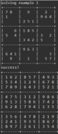

The Sudoku-solving program I developed in Java is a testament to the power of algorithms and recursion in solving complex puzzles. Inspired by my coursework in ICS 211, this program harnesses the principles of computer science to conquer Sudoku challenges efficiently.
At its core, this Java program is a Sudoku solver. Sudoku, a well-known logic-based number-placement puzzle, presents a formidable challenge due to its strict rules. Each row, column, and 3x3 subgrid must contain unique digits from 1 to 9. This constraint makes Sudoku an excellent candidate for algorithmic problem-solving.
The program employs a recursive approach to tackle Sudoku puzzles. This recursive methodology is the heart of its solving mechanism. It systematically explores possible values for each empty cell while ensuring that the rules of Sudoku are adhered to. When a conflict arises or a dead-end is reached, the program gracefully backtracks, retracing its steps to explore alternative paths. Through this iterative process, the program ultimately arrives at a valid solution for the Sudoku puzzle.
Source: TravisQuesenberry/Sudoku-Solver